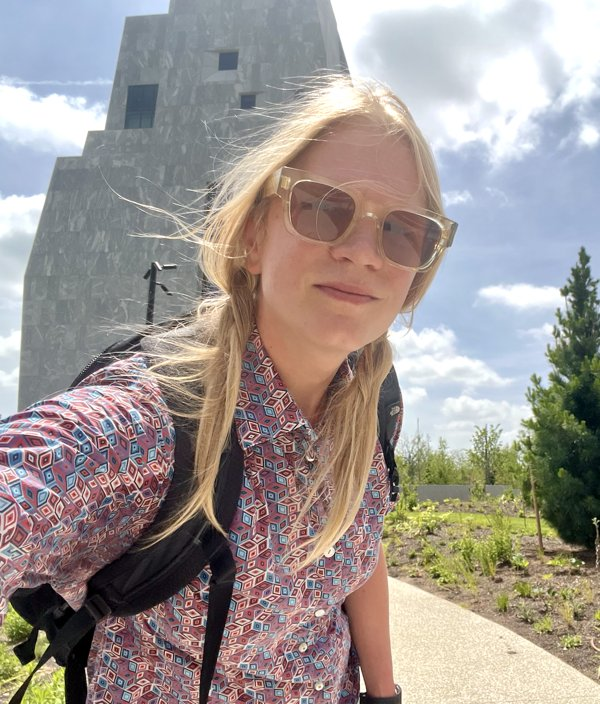

I'm Bri Carroll, Ph.D., Assistant Professor of Biology at Chicago State University. I study how the brain encodes sensory information, from basic sensory encoding to the more derived representations and associations that emerge from forebrain circuits. Using physiological and anatomical datasets, I examine how connectivity among the cortex, thalamus, and extrathalamic targets shapes each of these levels of sensory encoding.

Lab Philosophy
The lab is a gateway — a place where curiosity opens doors for student researchers building wet-lab and computational skills, practicing inquiry, and pursuing STEM careers.
We are all, always, passing through...along the way we learn, have fun, and contribute to science.
Our Research
Tiara Dunbar
Tiara is an undergraduate researcher whose research is supported by the Illinois Consortium for Life & Environmental Sciences.
Email: briana.j.carroll@gmail.com
GitHub: github.com/carrolletal